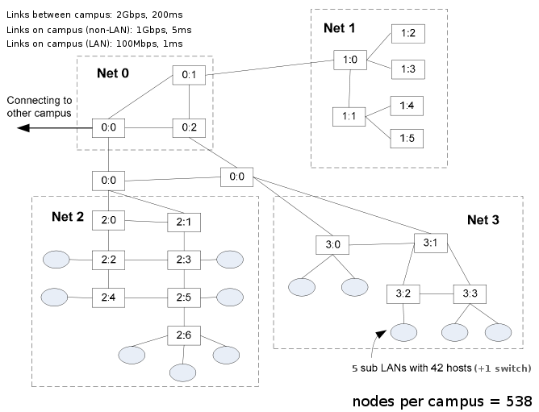

Nix-Vector Routing Documentation¶
Nix-vector routing is a simulation specific routing protocol and is intended for large network topologies. The on-demand nature of this protocol as well as the low-memory footprint of the nix-vector provides improved performance in terms of memory usage and simulation run time when dealing with a large number of nodes.
Model Description¶
The source code for the NixVectorRouting module lives in
the directory src/nix-vector-routing.
|ns3| nix-vector-routing performs on-demand route computation using a breadth-first search and an efficient route-storage data structure known as a nix-vector.
When a packet is generated at a node for transmission, the route is calculated, and the nix-vector is built.
How is the Nix-Vector calculated? The nix-vector stores an index for each hop along the path, which corresponds to the neighbor-index. This index is used to determine which net-device and gateway should be used.
How does the routing take place? To route a packet, the nix-vector must be transmitted with the packet. At each hop, the current node extracts the appropriate neighbor-index from the nix-vector and transmits the packet through the corresponding net-device. This continues until the packet reaches the destination.
Note
Nix-Vector routing does not use any routing metrics (interface metrics) during the calculation of nix-vector. It is only based on the shortest path calculated according to BFS.
How does Nix decide between two equally short path from source to
destination?
It depends on how the topology is constructed i.e., the order in which the
net-devices are added on a node and net-devices added on the channels
associated with current node’s net-devices. Please check the nix-simple.cc
example below to understand how nix-vectors are calculated.
How does Nix reacts to topology changes? Routes in Nix are specific to a given network topology, and are cached by the sender node. Nix monitors the following events: Interface up/down, Route add/removal, Address add/removal to understand if the cached routes are valid or if they have to be purged.
If the topology changes while the packet is “in flight”, the associated NixVector is invalid, and have to be rebuilt by an intermediate node. This is possible because the NixVecor carries an “Epoch”, i.e., a counter indicating when the NixVector has been created. If the topology changes, the Epoch is globally updated, and any outdated NixVector is rebuilt.
|ns3| supports IPv4 as well as IPv6 Nix-Vector routing.
Scope and Limitations¶
Currently, the |ns3| model of nix-vector routing supports IPv4 and IPv6 p2p links, CSMA links and multiple WiFi networks with the same channel object. It does not (yet) provide support for efficient adaptation to link failures. It simply flushes all nix-vector routing caches.
NixVectorRouting performs a subnet matching check, but it does not check entirely if the addresses have been appropriately assigned. In other terms, using Nix-Vector routing, it is possible to have a working network that violates some good practices in IP address assignments.
In case of IPv6, Nix assumes the link-local addresses assigned are unique. When using the IPv6 stack, the link-local address allocation is unique by default over the entire topology. However, if the link-local addresses are assigned manually, the user must ensure uniqueness of link-local addresses.
NixVectorRouting supports routes to IPv4 and IPv6 loopback addresses on localhost. Although it is not really intended to route to these addresses, it can do so.
Usage¶
The usage pattern is the one of all the Internet routing protocols.
Since NixVectorRouting is not installed by default in the
Internet stack, it is necessary to set it in the Internet Stack
helper by using InternetStackHelper::SetRoutingHelper.
Remember to include the header file ns3/nix-vector-routing-module.h to
use IPv4 or IPv6 Nix-Vector routing.
Note
The previous header files ns3/ipv4-nix-vector-helper.h and
ns3/ipv4-nix-vector-routing.h are deprecated and will be removed in
the future. These files are replaced with more generic (having IPv6
capabilities) ns3/nix-vector-helper.h and ns3/nix-vector-routing.h
respectively.
Using IPv4 Nix-Vector Routing:
Ipv4NixVectorHelper nixRouting;
InternetStackHelper stack;
stack.SetRoutingHelper(nixRouting); // has effect on the next Install()
stack.Install(allNodes); // allNodes is the NodeContainer
Using IPv6 Nix-Vector Routing:
Ipv6NixVectorHelper nixRouting;
InternetStackHelper stack;
stack.SetRoutingHelper(nixRouting); // has effect on the next Install()
stack.Install(allNodes); // allNodes is the NodeContainer
Note
The NixVectorHelper helper class helps to use NixVectorRouting functionality.
The NixVectorRouting model class can also be used directly to use Nix-Vector routing.
ns3/nix-vector-routing-module.h contains the header files for both the classes.
Examples¶
The examples for the NixVectorRouting module lives in
the directory src/nix-vector-routing/examples.
There are examples which use both IPv4 and IPv6 networking.
nix-simple.cc
/* * ________ * / \ * n0 -- n1 -- n2 -- n3 * * n0 IP: 10.1.1.1, 10.1.4.1 * n1 IP: 10.1.1.2, 10.1.2.1 * n2 IP: 10.1.2.2, 10.1.3.1, 10.1.4.2 * n3 IP: 10.1.3.2 */In this topology, we install Nix-Vector routing between source n0 and destination n3. The shortest possible route will be n0 -> n2 -> n3.
Let’s see how the nix-vector will be generated for this path:
n0 has 2 neighbors i.e. n1 and n3. n0 is connected to both using separate net-devices. But the net-device for n0 – n1 p2p link was created before the netdevice for n0 – n2 p2p link. Thus, n2 has neighbor-index of 1 (n1 has 0) with respect to n0.
n2 has 3 neighbors i.e. n1, n3 and n0. The n2 net-device for n1 – n2 p2p link was created before the n2 net-device for n2 – n3 p2p link which was before the n2 netdevice for n0 – n2 p2p link. This, n3 has neighbor-index of 01 (n1 has 00 and n0 has 10) with respect to n2.
Thus, the nix-vector for the path from n0 to n3 is 101.
Note
This neighbor-index or nix-index has total number of bits equal to minimum number of bits required to represent all the neighbors in their binary form.
Note
If there are multiple netdevices connected to the current netdevice on the channel then it depends on which order netdevices were added to the channel.
Using IPv4:
# By default IPv4 network is selected ./ns3 run nix-simpleUsing IPv6:
# Use the --useIPv6 flag ./ns3 run "nix-simple --useIPv6"
nms-p2p-nix.cc
This example demonstrates the advantage of Nix-Vector routing as Nix performs source-based routing (BFS) to have faster routing.
Using IPv4:
# By default IPv4 network is selected ./ns3 run nms-p2p-nix
Using IPv6:
# Use the --useIPv6 flag ./ns3 run "nms-p2p-nix --useIPv6"
nix-simple-multi-address.cc
This is an IPv4 example demonstrating multiple interface addresses. This example also shows how address assignment in between the simulation causes the all the route caches and Nix caches to flush.
# By default IPv4 network is selected ./ns3 run nix-simple-multi-address
nix-double-wifi.cc
This example demonstrates the working of Nix with two Wifi networks operating on the same Wifi channel object. The example uses
ns3::YansWifiChannelfor both the wifi networks.
Using IPv4:
# By default IPv4 network is selected ./ns3 run nix-double-wifi # Use the --enableNixLog to enable NixVectorRouting logging. ./ns3 run "nix-double-wifi --enableNixLog"Using IPv6:
# Use the --useIPv6 flag ./ns3 run "nix-double-wifi --useIPv6" # Use the --enableNixLog to enable NixVectorRouting logging. ./ns3 run "nix-double-wifi --useIPv6 --enableNixLog"